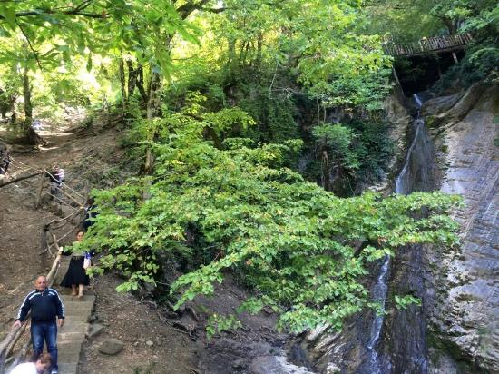
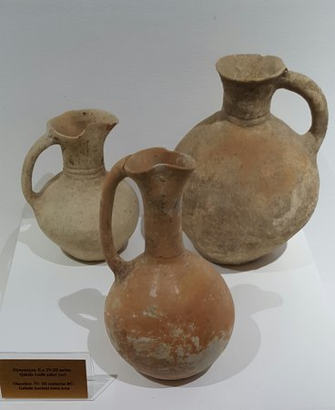
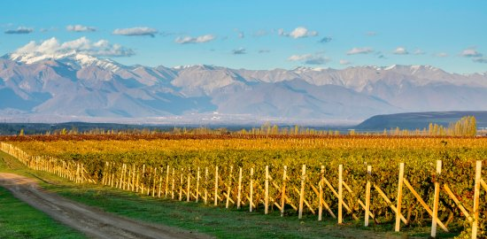

Yeddi-Gozel Waterfall

The waterfall area is beautiful but it's only one of the great places to visit while in Gabala.
QABALA ARCHAEOLOGICAL CENTER

Good for people who are interested in museum and history stuff....you will find human bones / coins/ Was not allowed to take photos.
SAVALAN ASPI WINERY

Imagine pure, crystal-clear water cascading down from the great Caucasus Mountains, winding its way through the lavish land in the foothills of the valley and suffusing the sun-bathed vines. These ripe, abundant grapes are then collected and handled with care and love before being transformed by the apparent magic of a master into wine. This is what happens every year at the vineyards of ASPI AGRO